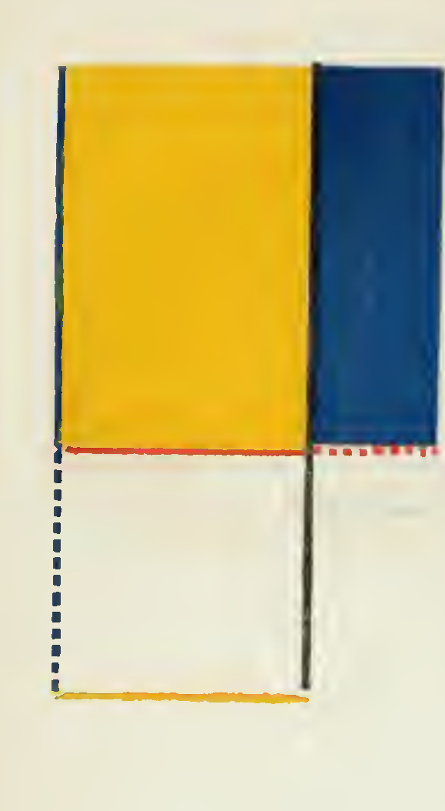

Proposition VI.30 — Extreme & Mean Ratio by Application of Areas¶
Book VI, Proposition XXX. Problem (Pickering p. 258 · G.328)
To cut a given finite straight line () in extreme and mean ratio.


Construction (:just:`I.46`, :just:`VI.29`, :just:`I.31`). On the given straight line ( + ) describe the unit square ( + ), and to the vertical side apply a rectangle equal to the whole unit square and exceeding by a figure similar to the square ([VI.29]).
Demonstration (:just:`C.N.3`, :just:`VI.14`, :just:`VI.def.3`).
Since the applied rectangle ( + ) equals the unit square ( + ), taking away the common part ([C.N.3]) leaves:
= .
Because equal equiangular parallelograms have the sides about their equal angles reciprocally proportional ([VI.14]),
∴ ( + ) : ∷ : ,
and is divided in extreme and mean ratio ([VI.def.3]). Q.E.F.
See Commentary on Proposition VI.30.